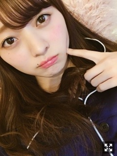
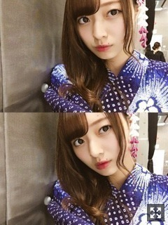
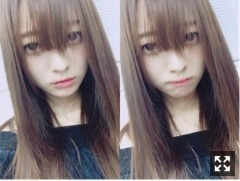
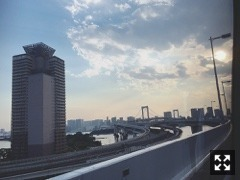

空が綺麗で見とれてたの。梅澤美波
みなさまこんにちは！！
乃木坂46 ３期生の
梅澤美波です！

だいぶまえの(なんか幼いねいつもと違う
食欲が止まらんです、助けてください
いくら食べてもお腹いっぱいにならん
NOGIBINGOさんではづきがいってた
胃の中ブラックホールとはこのこと。
寝る前に料理動画見るのが日課で
明日の朝ごはんを希望に生きてます( ¨̮ )（笑）
食べたいおなかすいた誰が恵んでくれ、、
神宮初日終えました！
まだ詳しくは書けませんが、
来てくださった皆様、本当にありがとうございました！
リハーサルのときは雨が降ってたんです、
でも、晴れました！
太陽も出てて、最高に気持ちよかった！
温かく迎えてくださって
本当にありがとうございました。
最高に楽しかった！！！
皆様の顔もすごく見えたし
推しタオルもサイリウムも団扇もボードも
全部全部本当にありがとう。
笑顔が見れてパワーをもらえました☺︎
もっとこうしたいああしたいって
思えることも今日見つけました
明日はもっともっと成長します
明日だけじゃなくてこれからも！
こうやって学んでいくんだなあと感じています。
ちゃんとした気持ちは
それまで待っていてほしいです！
明日は２日目！
３期生だけでも会場を熱く盛り上げたい！
わたし、いろんな所に出没しています、
だから見つけたらこっち見てね
ちゃんと見つけてね☺︎☺︎
(別に興味ないよって方も、手とかふってくれたら喜ぶ( .. )
ここに立たせてもらってるのは
当たり前じゃなくて
先輩方のおかげです、先輩方がいなかったら何も出来ていません
だから、ちゃんとその意味を考えて
このステージに立たせていただいてることに感謝して
明日も本番に望みます
偉大すぎる先輩方がいること、
ここの場所にいられることが本当に幸せです。
明日もがんばるぞ〜！！
来られる方、楽しもうね☺︎
来られないって方も、遠くにいる皆様にもパワー届けられるくらい楽しんでくるからね( ¨̮ )

お祭り行きたい連れてって〜一緒にいこ〜（笑）
(生写真のやつです、ゲットしてくれた？？
大人っぽくしたくて青のものを選びました◎
花火大会行きたいな〜
なにか食べながら見ていたいですね〜
人混みは苦手なので人が少ない穴場を見つけてとかもロマンチックですね〜（笑）
じゃがバタが食べたい、シャーピンも食べたいしたこ焼きもチョコバナナも食べたい、、
お祭りって結局楽しみは食べ物ですよね☺︎
質問コーナー(すくないです
Q.服を買う時に重視することは？
A.形とサイズ感かなあ。無地のものが好きだから形とか素材で決めることが多いかもしれない！レースとかフリルとか形が変わっているものとか。あとは背が大きいのもあって、見た時と着た時サイズ感が全然違うから絶対試着して買います☺︎
Q.どの季節が好き？
A.ダントツ冬が好き☺︎冬の匂いとか雰囲気とか空気とか冬服とかクリスマスとか好きなことだらけ(¨̮)布団にくるまるのがすきなの〜冬のこと考えるだけでわくわくする(¨̮)もちろん夏のイベント事だったりが好きだし、秋の金木犀とか雰囲気も好きだし、春の始まるって感じも好き(¨̮)伝われ〜（笑）
あやの肩( ¨̮ )
ビンゴさんの時☺︎
体操服の似合わなさが致命的なんです。
高校の時からそうだった、、
全国握手会ありがとうございました！
これにてインフルエンサー握手会
すべて終了でございます！！
初めての握手会、
私が並んでいた立場から
握手をする立場になるなんて
考えてもなかったしとても夢のある話ですよね、人生何があるかわからないものです
たくさん並んでくれて本当にありがとう！
わたしはりりあとペアだったんだけど
本当にたくさんの方が並んでくれていたみたいで、みんな疲れちゃったよね(；＿；)
私はずっと皆様を待っているだけだけど
長いレーンに何十分も何時間も並んでくれてるの見ると
私なんかのためにありがとうといつも思っていたよ
それでも私の前では笑顔でたくさん元気くれて本当にありがとう！
少ししかこれないけど、とか
枚数気にする方も多かったけど
そんなの関係なく深いお話だったり
楽しい時間を過ごしてもらえてたらそれ以上の幸せはないです！！
全国握手会してて思ったことは
優しくて丁寧に接してくれているなあと
いつも常々思っていました。
みんないい人だな〜って
推しと同じペアになった子との話題も
ちゃんと考えてくれる方が多いの☺︎
ありがとう、こっちまで嬉しくてほっこりしてたよ〜( ¨̮ )
いつもの顔ぶれの方も
初めましての方もありがとう！
いつも本当にありがとう、
これからもよろしくね( .. )
告知◎
６／２４ B.L.T。さん
３期生で連載させて頂くことになりました！
ペアで面白い企画をやらせて頂いています☺︎
私は初回にももこと２人で出ています！
ももことペアで撮影、念願だったので嬉しくて楽しくて幸せでした( ¨̮ )またできますように
７／７ BOMBさん
れのとペアグラビア
７／９ 乃木坂46えいご（のぎえいご） 夏の60分SP
川後さん、能條さん、和田さんと
３期生12人で出させていただいています！
色々なことにチャレンジしました、、
面白いと思うのでぜひ☺︎☺︎
収録楽しかったな〜( .. )
あと、もう一つ
まだ解禁前なので言えないですが
早く言いたいおしらせがあるから
楽しみにしててね☺︎☺︎
はやくいいたい( .. )
わくわく
そして8月9日、18thシングル発売決定いたしました！
個別握手会への申し込みも始まったので
ぜひ、会いに来てほしいなあ( .. )
日程と部数が公開されたのですが
今回から４部制になってみたいで、、
とても嬉しいです、驚いています
前作は追加枠含め３部だったのですが
もう１部皆様に会える時間が増えました！
全会場１.２.３.５部です！
今回も１部から５部までいます☺︎
４部は空いちゃうけど( .. )ごめんね
皆様に会える時間が増えた！嬉しい！幸せ！
ハロウィン近かったりするし
コスプレとか色々やりたいなーって思っておるよ。
制服も着たいし
スーツとかも着てみたいし、、
部数が増えた分なにかできたらいいな☺︎
たくさん工夫して
髪型とか服装とかリクエスト答えたり
楽しい握手会にしたいって思ってます！
コメントへ残してみてね〜
握手会、私自身すごく好きで
ファンの方と直接話せる機会だし
とても大切にしたいなあと思っています。
楽しもうね！！
もう会ったことある方は、また会えたらいいな( ¨̮ )
まだ行ってなくて気になってるよって方も
１度は会いに来てみてね☺︎
たくさんの出逢いがありますように。☺︎
待ってます〜☺︎☺︎

不機嫌らしい、
そして、SHOWROOMさんで
個人ページを持たせていただくことになりました！
懐かしさを感じています、、
オーディション時はラジオ配信だったので
今こうして乃木坂46として配信できることが
なんというか感慨深いです。
自分のタイミングを見つけて
できるときにやろうと思います、
ぜひ覗きに来てくださいね〜
(お話が上手になれたらいいななんて思います
そして私はもう高校卒業したので
夜でも出来るのですね、
皆様どの時間が見やすいかなどコメントへ残していってみてください◎
どんな配信して欲しいかなど、、
コメント欄見てると
みんなそれぞれ頑張ってるんだな〜
って思います
みなみもがんばらないと！！
学校とかバイトとか就活とかお仕事とか
握手会でいつも会いに来てくれる方も
事情があって会いに来れない方も
みんな想いは伝わってんでー！！！
ありがとうね。☺︎
幸せ者です、出逢えて嬉しい☺︎
それだけで意味があるって思えるありがとう！
もう７月なんですね、、
１年の半分が終了とはとても思えないくらい毎日怒涛の日々ですあっとゆうまに過ぎてゆく
下半期、よりよいものにしたい
からがんばります

どうしてこんなに綺麗なんだ、、
空がすき。☺︎
この場に立てる人生考えてもいなかった、
あの時の私には想像もつかないだろうな〜
きっと何年後かに振り返った時
今ってすごく貴重な時間だろうなって思う
から、大切にします、
Original：https://www.nogizaka46.com/s/n46/diary/detail/39552?ima=0525&cd=MEMBER